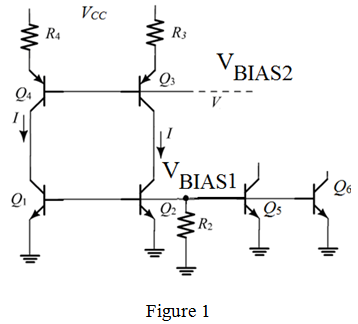
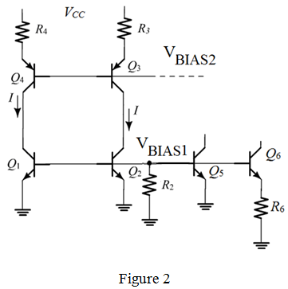

Step 1:
Refer to Figure 12.38 in the text book for a self-biased current-reference source utilizing a Widler circuit.
The circuit is augmented with emitters connected to ground and bases connected to to generate constant currents of  and respectively. Draw the circuit.
and respectively. Draw the circuit.

Step 2:
The base-emitter voltage of the transistor  is equal to that of the transistor, .
is equal to that of the transistor, .
As , .
Thus, the transistors  and have the same emitter area.
and have the same emitter area.
The base-emitter voltage of the transistor is equal to that of the transistor  .
.
As and , .
Thus, the emitter area of the transistor is four times the emitter area of the transistor  .
.
Step 3:
Draw the circuit by connecting a resistor to the emitter of  and by reducing the current
and by reducing the current  to
to  .
.

Step 4:
Observe from the circuit that the base-emitter voltages,
Thus, the resistance, is .
Step 5:
The output resistance of

is simply

.
Determine the resistance  .
.
Thus, the resistance is .
For  , the output resistance is increased by a factor of where .
, the output resistance is increased by a factor of where .
Thus,
The resistance is,
Step 6:
Determine the output resistance of the current source with connected.
Thus, the output resistance of the current source  with
with  connected is .
connected is .
Determine the resistance .
Thus, the output resistance of the current source  is .
is .